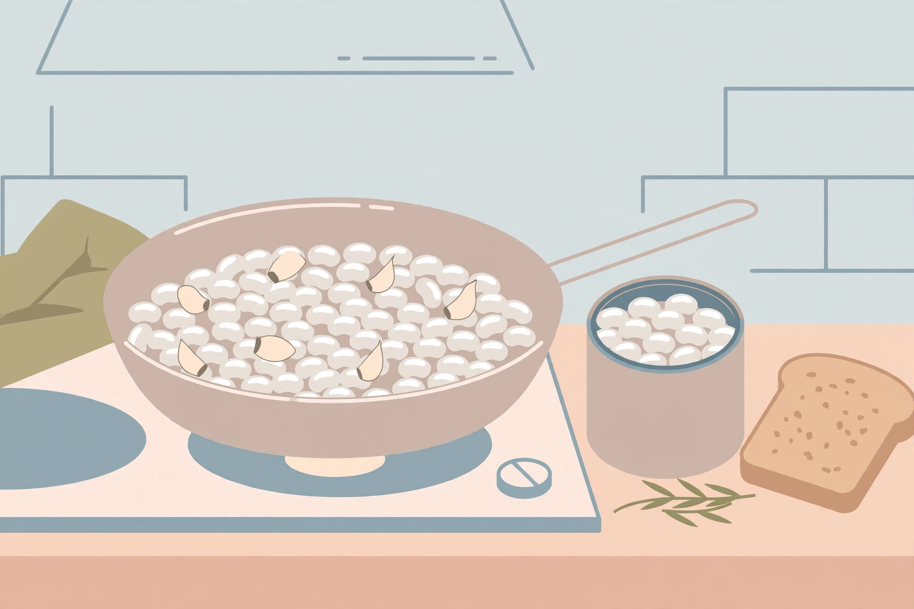

Canned bean meals beyond chili

Open a cupboard in almost any home and there is a can of beans in it, bought with good intentions and then quietly ignored. The usual rescue is chili, and the usual backup is soup — both fine, both a little wearying by the third time in a month. The problem is not the beans. It is that most bean roundups organize by bean variety (ten things to do with black beans, ten with chickpeas) when the real choice at 6 p.m. is about format: how much time, how much washing up, and what texture would make dinner feel like dinner. This guide organizes by format instead. One standard can, five genuinely different meals, and none of them is chili or soup.
First, the two decisions that change everything
Decision one: the liquid. Every canned-bean recipe quietly makes a choice about the canning liquid, and making it on purpose is the single biggest upgrade available. The liquid carries salt and starch. That is a gift in a mash or a sauce, where it thickens and seasons for free, and a problem anywhere beans need to crisp or stay distinct, where it makes them steam instead of brown.
Decision two: the rinse. Draining and rinsing is not just fussiness. Research summarized by The Bean Institute found that draining canned beans removes about 36 percent of the sodium on average, and draining plus rinsing removes about 41 percent. So the rule is simple: if the liquid stays in the dish, taste before adding any salt; if the beans get rinsed, season them properly, because you have washed off a good part of their seasoning along with the sodium.
One more fact that unlocks all five formats: canned beans are already cooked. They were blanched and pressure-cooked in the sealed can, which is why they are safe to eat straight from it. On the stove they only need to warm through and pick up flavor — long simmering turns them to mush, which is a technique in the mash format and a mistake everywhere else.
The format picker
| Format | Time | Liquid | Best cans | Dinner feel |
|---|---|---|---|---|
| Skillet beans | About 10 minutes | Drain, splash back in | White beans, black beans | Warm, saucy, spooned over toast or rice |
| Mash, spread, crisp | About 15 minutes | Keep a few spoonfuls | Any bean, refried beans | Quesadillas, tostadas, loaded toast |
| Beans as the sauce | About 15 minutes | Keep it all | White beans, chickpeas | Pasta night, no jar required |
| The no-cook plate | About 10 minutes | Drain and rinse | Kidney beans, chickpeas | A composed plate, not a compromise |
| Baked, upgraded | About 30 minutes | Drain most | Navy or white beans, baked beans | Slow-feeling dinner from a fast can |
Format 1: the 10-minute skillet
- Warm a good glug of olive oil in a wide pan over medium heat. Add garlic — fresh, powdered, or dried flakes all work — and a pinch of chili flakes, and let it sizzle for about a minute.
- Drain a can of white or black beans, saving the liquid. Add the beans to the pan with a splash of that liquid or water.
- Simmer 5 to 7 minutes, shaking the pan now and then, until the beans are hot through and glossy and the liquid has reduced to a light coating.
- Finish with salt (carefully, if any canning liquid went in), black pepper, and something acidic — a squeeze of lemon or a small splash of vinegar.
- Serve over toast, rice, or a baked potato, or with a fried or poached egg on top — a combination home cooks in an Ask MetaFilter thread on low-prep bean meals return to again and again, often with wilted greens underneath.
What success looks like: the beans hold their shape, sit in a shiny spoonful of sauce rather than a puddle, and taste seasoned all the way through, not just salty on the surface.
Format 2: mash, spread, crisp
- Drain a can of beans but keep two or three spoonfuls of the liquid. Tip the beans into a bowl with cumin, garlic powder, and smoked paprika if you have it.
- Mash with a fork or potato masher, adding the reserved liquid a spoonful at a time. Stop at chunky-spreadable — about two-thirds mashed, one-third whole.
- Taste and salt it now; the mash should taste like a finished filling, because it is one.
- Spread thickly on tortillas with cheese for quesadillas, on tostadas or toast, or roll into wraps. Cook quesadillas in a dry or lightly oiled pan until both sides are crisp and the middle is hot.
What success looks like: the spread holds a spoon's shape, does not weep liquid onto the tortilla, and the finished quesadilla cuts without the filling sliding out. Refried beans are the store-bought shortcut to exactly this format, which is why a can of them earns its shelf space.
Format 3: beans as the sauce
This is the format most roundups miss entirely: a can of white beans, blended or mashed hard with its liquid, garlic, and olive oil, becomes a creamy pasta sauce with no cream and no jar. Roundups like Motherly's canned-bean dinner list get halfway there with a white bean pasta, but the beans-as-sauce version is simpler still.
- Start pasta in well-salted water. Any short shape works.
- In a second pan, warm olive oil and garlic. Add a whole can of white beans with all its liquid and simmer 5 minutes.
- Mash roughly in the pan for a rustic sauce, or blend for a smooth one. Loosen with pasta water until it pours like a sauce.
- Toss the drained pasta through the sauce for a full minute so it absorbs flavor. Finish with black pepper, chili flakes, and hard cheese if you have it.
What success looks like: the sauce coats each piece instead of pooling at the bottom of the bowl, and a spoon dragged through it leaves a brief trail.
Format 4: the no-cook plate
On the hottest, tiredest nights, the best canned-bean dinner involves no pan at all. Rinse a can of kidney beans or chickpeas and treat them like the center of a composed plate: toss them with olive oil, vinegar or lemon juice, salt, dried herbs, and anything crunchy the cupboard offers — diced onion, a jarred pepper, a handful of crackers crumbled over at the end. Serve with bread, cheese, olives, or a sliced tomato when one exists. The trick that separates a plate from a sad salad is generosity with oil and acid and a full 10 minutes of marinating while you set everything else out.
Format 5: baked beans, upgraded honestly
A can of baked beans is already a meal, but it is a sweet one, and 25 to 30 minutes in a moderate oven with the right additions makes it taste cooked rather than opened. Stir in a spoonful of mustard, a splash of vinegar, garlic powder, and smoked paprika or a little hot sauce; top with breadcrumbs or crushed crackers if you want a crust. Bake until bubbling at the edges. Starting from plain navy or white beans instead? Add a spoonful of tomato paste and a teaspoon of brown sugar along with the same seasonings and a cup of water, and give it the full half hour.
Leftover and food-safety notes
Opened canned beans are perishable food, whatever the unopened can's long life suggests. Move leftovers out of the can into a covered glass or plastic container — food stored in an open can can pick up a metallic flavor, especially acidic food — and refrigerate promptly. FoodSafety.gov's leftover guidance is to refrigerate perishable food within two hours, use refrigerated leftovers within about three to four days, and reheat them to 165°F (74°C). Mashed beans and bean sauces freeze well in portions; skillet and baked beans are best eaten fresh or the next day, reheated until steaming throughout.
FAQ
Do I have to rinse canned beans? No — it is a tool, not a rule. Rinse when beans need to stay distinct or crisp, or when you want the roughly 41 percent sodium reduction draining and rinsing gives. Keep the liquid when you want free thickness and seasoning in a mash or sauce, and salt more carefully.
Which bean is the most versatile single can? White beans (cannellini or great northern). They skillet well, mash smoothly, and blend into the best sauce — three of the five formats from one can.
Can these formats use home-cooked dried beans? Yes. Everything here works with cooked dried beans and a little of their cooking liquid; just remember they arrive unsalted compared with canned, so season more boldly.